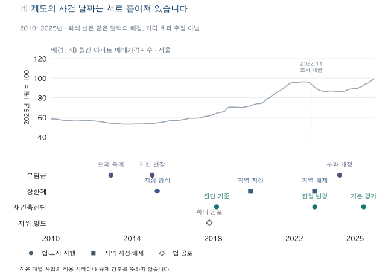

정비사업 숫자 읽기 · 네 규제의 적용 날짜
재건축 규제는 언제 바뀌었나? 네 제도의 날짜를 따로 읽는 법
재건축부담금·분양가상한제·재건축진단·조합원 지위의 주요 연혁을 비교합니다. 공포·시행·지역 지정과 사업의 신청일을 구분하고 서울 가격지수와 정책 효과를 따로 읽습니다.
분석 기간 · 2003~2026년 선택 연표 · 서울 KB 지수 2010~2025년 | 자료 기준일 · 법령 확인 2026-10-19~20 · KB 수집 2026-10-03
과거 기사에서 ‘재건축 규제 완화’를 읽었다고 해서 그날부터 내 사업의 조건이 모두 바뀐 것은 아닙니다. 재건축부담금, 분양가상한제, 재건축진단, 조합원 지위 양도 제한은 서로 다른 날짜와 사건을 기준으로 적용됩니다. 법이 바뀐 날과 우리 사업에 새 규칙이 적용되는 날을 나누어 읽어야 합니다.
네 제도에 같은 ‘규제 시작일’을 넣어도 될까요?
한 날짜로 줄이면 법의 적용 조건이 사라집니다. 먼저 그 기사가 비용, 공급가격, 건물 평가, 권리 취득 중 무엇을 다루는지 구분해야 합니다.
| 제도 | 확인할 대상 | 연혁에서 놓치기 쉬운 사건 |
|---|---|---|
| 재건축부담금 | 법정 초과이익의 산정과 부담금 부과 | 면제 특례의 인가 신청 기한, 개정법의 결정·부과 적용례 |
| 분양가상한제 | 일반 공급 주택의 분양가격 제한과 적용 지역 | 법 시행과 지역 지정, 입주자모집 승인 신청 등 당시 부칙의 사건 |
| 재건축진단 | 평가 방식·가중치·판정과 실시 시점 | 고시 시행, 진단 의뢰·진행 상태와 경과조치 |
| 조합원 지위 양도 제한 | 양수자의 조합원 자격 취득 | 투기과열지구 여부, 사업 유형·인가 단계와 예외·적용례 |
제도별 대표 확인 항목입니다. 개인에게 적용되는 모든 예외를 열거한 표는 아닙니다.
예를 들어 재건축부담금의 면제 신청 기한과 조합원 지위 양도 제한의 인가 단계는 별개의 규칙입니다. 한 조건을 충족했다고 다른 조건도 충족하는 것은 아닙니다. 재건축부담금 산식과 적용례, 재건축진단의 평가 방식에서 각 제도의 세부 구조를 이어서 볼 수 있습니다.
주요 규제는 어떤 순서로 바뀌었나요?
아래 표는 네 축의 주요 사건을 같은 달력에 놓되, 공포·시행·지역 지정·신청 기한을 구분합니다. ‘규제가 강한 해’처럼 하나의 점수로 합치지 않습니다. 과거의 기준을 현재 개인의 자격·부담액에 그대로 적용해서도 안 됩니다.
| 날짜·종류 | 제도와 변화 | 함께 확인할 조건 |
|---|---|---|
| · 공포·시행 | 도시정비법 제7056호: 투기과열지구 재건축의 조합설립인가 후 양수자에 대한 조합원 자격 제한 신설 | 시행 전에 설립인가를 받은 사업의 기존 조합원으로부터 양수한 경우의 부칙 특례 등을 함께 확인 |
| · 제정 · 시행 | 법률 제7959호: 재건축초과이익 환수에 관한 법률 도입 | 법의 도입과 이후 면제 특례·부과 규정 개정을 구분 |
| · 공포 · 관련 조문 시행 | 주택법 제8383호: 공공택지 외 일반 공급 공동주택으로 분양가격 제한 확대 | 사업계획승인 신청과 기존 승인·신청분의 입주자모집승인 신청 등 부칙의 적용례 확인 |
| · 공포·시행 | 법률 제11589호: 2014-12-31까지 관리처분계획 인가를 신청한 사업의 부담금 면제 특례 | 시행 전 신청·미부과 사업에 관한 부칙 적용례도 확인 |
| · 공포·시행 | 법률 제12958호: 부담금 면제 특례의 신청 기한을 2017-12-31까지 연장 | 인가 신청일을 인가 완료일·준공일로 바꾸지 않음 |
| · 공포 · 시행 | 주택법 제12959호: 민간택지 분양가상한제를 지역 지정 방식으로 개정 | 제38조의2는 시행 후 입주자모집 승인을 신청하는 분부터 적용. 제도 변경과 개별 지역 지정은 별개 |
| · 공포 | 도시정비법 제14943호: 재개발·도시환경정비사업의 관리처분계획 인가 후 양수자 제한 추가 | 제19조 제2항은 공포 후 3개월 경과일부터 시행하며, 확대 적용은 시행 후 최초 사업시행인가 신청부터. 전부개정법 관련 조문은 2018-02-09 시행 |
| · 고시 시행 | 고시 제2018-141호: 주거환경 중심 평가의 가중치가 주거환경 15%·마감 및 설비 25%·구조안전성 50%·비용 10% | 1-4-4·3-6-1 개정규정은 시행 후 최초 진단기관 의뢰부터 적용. 당시 최종 30점 이하가 재건축 판정 |
| · 지역 지정 | 공고 제2019-1539호: 민간택지 상한제 적용지역으로 서울 8개 구의 27개 동 지정 | 해당 8개 구 전체 지정으로 읽지 않음 |
| · 지역 확대 | 공고 제2019-1733호: 서울 13개 구 전체·5개 구 일부 동과 경기 과천·하남·광명 일부 동으로 확대 | 행정구역 이름만으로 모든 동·사업의 적용을 확정하지 않음 |
| · 지역 해제 | 공고 제2023-3호: 강남·서초·송파·용산구 전 지역을 남기고 나머지 민간택지 지정지역 해제 | 효력발생일 이후 입주자모집 승인 신청부터 적용. 공공택지 적용 범위와 구분 |
| · 고시 시행 | 고시 제2023-9호: 주거환경·마감 및 설비·구조안전성 각 30%, 비용 10%; 최종 재건축 판정 기준 45점 이하 | 평가 분야의 등급 점수와 최종 성능점수를 구분하고 적용례·진행 상태 확인 |
| · 시행 | 법률 제19850호: 부담금의 개시시점·면제와 누진 구간, 감경·납부유예 규정 변경 | 시행 이후 부담금을 결정·부과하는 사업부터 적용하는 부칙 확인 |
| · 고시 시행 | 고시 제2024-514호: 진단기준 개정. 네 분야 가중치는 2023년과 동일 | 가중치가 같다고 세부 평가항목과 문서 전체가 같다는 뜻은 아님 |
| · 고시 시행 | 고시 제2025-284호: 기본 평가 가중치 주거환경 40%·마감 및 설비 30%·구조안전성 30% | 기본 표에서 비용이 빠졌지만 요청에 따른 별도 평가 방식도 확인. 진단을 받아야 하는 법정 시점 변경과 구분 |
| · 고시 시행 | 고시 제2026-360호: 확인한 현행 진단기준의 주요 가중치·최종 판정표는 2025년과 동일 | 핵심 표가 같다는 확인이며 문서 전체가 동일하거나 모든 사업에 같은 경과조치가 적용된다는 뜻은 아님 |
법률 번호와 고시·공고 번호는 서로 다른 문서입니다. 근거는 도시정비법 개정문, 주택법 개정문, 재건축초과이익환수법 개정문과 아래 방법의 진단·지정 원문입니다.
같은 날 개정됐는데 왜 적용 시점은 다를까요?
2007년: 공포일과 관련 조문의 시행일이 다릅니다
주택법 제8383호는 4월 20일 공포됐지만 분양가격 제한 관련 조문은 9월 1일 시행됐습니다. 부칙은 9월 1일 이후 최초 사업계획승인 신청분을 다루는 한편, 8월 31일 이전 승인·신청분이라도 12월 1일 이후 입주자모집승인 등을 신청하는 경우를 따로 정합니다. 정비사업으로 공급하는 주택은 주거환경개선사업 제외 여부와 관리처분계획 인가 신청에 관한 당시 규정을 확인해야 합니다. 달력의 시행일 하나만으로 모든 사업을 나누기 어려운 사례입니다.
2014년 말: 신청 기한 연장과 새 제도의 시행을 구분합니다
2014년 12월 31일에는 부담금 면제 특례의 신청 기한을 늘린 법과 민간택지 상한제를 지역 지정 방식으로 바꾼 법이 함께 공포됐습니다. 앞의 법은 공포일부터 시행됐고, 뒤의 관련 제도는 2015년 4월 1일 시행됐습니다. 두 법의 대상과 적용 신청도 다릅니다. 이를 ‘2015년부터 모든 재건축 규제가 해제됐다’는 한 줄로 합칠 수 없습니다.
부담금의 2017년 12월 31일은 특정 특례의 관리처분계획 인가 신청 기한입니다. 그날까지 모든 사업을 준공해야 한다는 뜻도, 그 기간 법이 폐지됐다는 뜻도 아닙니다. 상한제 역시 지역 지정 방식으로 바뀐 사실과 실제 어느 지역을 지정했는지 따로 확인해야 합니다.
2023년 1월 5일: 같은 날짜라도 확인할 문서가 다릅니다
민간택지 상한제 지역 해제와 재건축 안전진단 기준 변경은 같은 날짜에 놓이지만 하나의 규제가 아닙니다. 전자는 지정지역과 입주자모집 승인 신청 시점을, 후자는 평가 방식과 진단의 진행·적용 조건을 확인합니다. 한쪽 변경을 근거로 다른 쪽의 통과나 비용 절감을 확정할 수 없습니다.
상한제를 다루는 기사는 조합원 분양가와 일반분양가의 차이도 구분해서 읽어야 합니다. 일반분양 가격 제한의 변화가 모든 조합원의 최종 분담금을 같은 비율로 바꾸는 것은 아닙니다.
‘정책 발표 예정’은 이미 시행된 규칙이 아닙니다
2017년 8월 2일 정부 문답에는 기존 규정의 설명과 앞으로 예외를 허용할 예정이라는 설명이 함께 있습니다. 이 발표일을 모든 예외의 시행일로 옮기면 안 됩니다. 이후 개정법의 본문과 부칙을 찾아 실제로 무엇이 시행됐는지 대조해야 합니다.
가격선에 규제 날짜를 겹치면 효과를 알 수 있나요?
아래 그림은 서울 전체 KB 월간 아파트 매매가격지수와 선택한 제도 사건을 같은 달력에 놓은 배경 비교입니다. 법률이 특정 단지의 가격을 얼마나 올리거나 내렸는지 추정한 그림이 아닙니다.

기간은 2010년 1월~2025년 12월의 192개월, 지수 기준은 2026년 1월=100입니다. 점은 해당 종류의 사건일이며 규제의 강도나 모든 사업의 적용 시작을 뜻하지 않습니다. 2003·2006·2007·2026년 사건은 그림 기간 밖이어서 위 연표에서만 설명합니다.
정책이 가격에 영향을 줄 수 있지만, 가격 변화에 대응해 정책이 바뀔 수도 있습니다. 같은 시기에 금리·경기·공급·다른 제도도 움직입니다. 서울 전체 지수에는 해당 규제의 직접 대상이 아닌 아파트도 포함됩니다. 따라서 점 전후로 선이 오르거나 내렸다는 사실만으로 규제 효과나 다음 매수 시점을 정할 수 없습니다.
면제 신청 기한을 가격선의 ‘규제 없음’ 구간으로 칠하는 것도 부정확합니다. 신청 기한이 같은 사업이라도 인가·착공·준공·부과는 다른 해에 일어날 수 있습니다. 이 그림은 사건 순서를 놓치지 않기 위한 참고이며, 인과효과·시차·수익률은 계산하지 않았습니다.
오래된 기사와 지금의 사업 안내문은 어떻게 대조하나요?
- 제도 이름을 특정합니다. 분담금과 재건축부담금, 조합원 가격과 일반분양 가격, 진단 평가와 사업 인가를 구분합니다.
- 기사의 날짜가 무엇인지 표시합니다. 발표일·공포일·시행일·지역 지정일 중 무엇인지 원문에서 찾습니다.
- 본문 옆의 부칙을 읽습니다. 같은 법률이라도 일부 조문의 시행일이 다르고, 이미 진행 중인 사업에는 별도 적용례가 있을 수 있습니다.
- 사업의 문서상 사건을 맞춥니다. 신청 접수, 인가, 진단 의뢰, 결정·부과의 날짜를 각각 확인합니다. 준공 연도 하나로 대신하지 않습니다.
- 현재 문서와 과거 문서를 구분합니다. 지금 받은 안내문의 법령 버전·산정 기준일과 변경 내역을 확인합니다. 과거의 기준표가 현재 계약·자격을 자동 결정하지 않습니다.
이 순서는 과거 규제를 외우기 위한 절차가 아닙니다. 어떤 조건이 내 사업에 관련되는지 확인할 문서를 찾는 순서입니다. 날짜나 사업 단계와 문서의 날짜가 확인되지 않았다면 비용·자격·입주 전망을 먼저 확정하지 말고 해당 고시와 인가·신청 기록부터 맞춰 보세요.
원문 확인 범위와 지수의 의미
2026년 10월 20일 도시정비법과 주택법의 공식 제·개정문에서 법률 제7056·14943·8383·12959호의 본문·부칙을 확인했습니다. 재건축초과이익환수법의 제정·면제 특례·2024년 개정, 분양가상한제 지정 공고와 2023년 해제, 2021년 이후 진단기준은 기존 글에서 2026년 10월 19일 검토한 공식 원문을 다시 대조했습니다. 과거 문서와 미래 시행 예정 내용을 현행 규칙에 섞지 않았습니다.
2018년 진단은 고시 제2018-141호와 CODIL PDF의 1·12·13·24쪽에서 제목·가중치·최종 판정·부칙을 확인했습니다. 2023년 이후 기준은 재건축진단 기준과 연혁으로 연결됩니다. 2018년 직전 버전 전체를 검증하거나 모든 개정 내용을 열거하지는 않았습니다.
분양가상한제의 2019·2023년 지정 범위는 2023 주택업무편람 PDF 58쪽(인쇄 56쪽), 당시 공고와 2023년 해제 공고를 함께 확인한 범위입니다. 개별 주택의 예외·청약·전매·대출 규칙 전체를 뜻하지 않습니다.
가격은 KB의 월간 아파트 매매가격지수입니다. 이미 공개한 서울 계열에서 2010년 1월~2025년 12월만 사용했으며 원래 조사 지수와 기준을 유지했습니다. 2022년 11월 조사 개편과 2026년 표본·기준시점 개편을 고려해야 하는 보유 계열입니다. 실거래 중위가격이나 이 블로그가 추정한 개별 주택 가격이 아닙니다. 월별 값은 공개 지수 자료에서 확인할 수 있습니다.
분석·집필: 파파펭귄 (Nobot Kang). 에이전트로 공식 원문 확인·초안 작성·내용 및 사이트 검토를 보조했습니다.